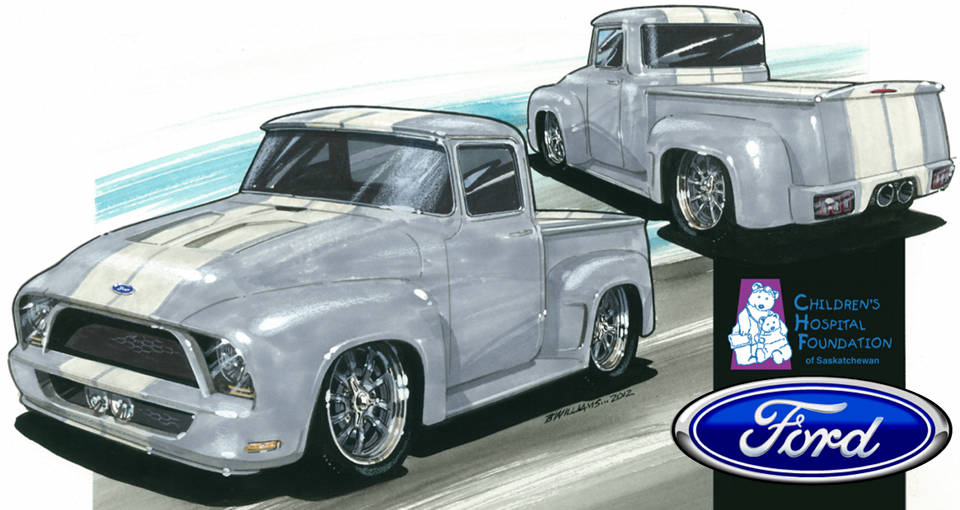

The Dream Begins
So how does a simple idea for a team building exercise end up with what you see here?
Tom Foster, President and General Manager of Industrial Machine & Mfg. Inc. (IMM) in Saskatoon, Saskatchewan, Canada, would occasionally bring up the idea of building a project truck as a company team building exercise. It was IMM’s 55th anniversary - when would be a better time? The shop was full of talented men and women, many of whom were automotive enthusiasts. This should be a piece of cake - a simple, straight forward truck rebuild. The seed was planted in true prairie form and the idea was allowed to grow.
Some time passed and the fourth new member of the Foster family arrives. This young lady’s first 14 days were challenging - back and forth to the hospital and finally all was well. Reflecting on the time spent in the hospital, Tom had a revelation to possibly use the truck idea to raise funds as a donation to the Saskatchewan Children’s Hospital Foundation to help build a long awaited children’s hospital in Saskatoon. This would give back and help to provide a better future for sick children and their families when they are faced with life threatening illnesses. “I’ll buy the truck and pay for the parts” Tom said, “and we can get volunteers from the shop to build it, sell raffle tickets and donate the money raised.” It was the company’s 55th year in business so we could tie the anniversary to the fund raising project and hopefully raise $55,000. Perfect!
More time passed without any further thought. Dave Pihach, Director of Business Development at IMM, doing some reflecting of his own, had an idea. He would fly to Phoenix and attend the Barrett Jackson and Russo and Steele Auctions to get an insight into what vehicle we should build and the calibre this build must be to raise alot of money - more than just $55,000. What if we could auction it off at the Barrett Jackson - how much money could we raise then?
Tom went for the idea, Dave bought a plane ticket and off to Phoenix he went. His good friends and mentors for the week, Larry and Brenda Pederson, of Fountain Hills, Arizona took him in. Better hosts you will not find and with Larry, a car collector and builder himself with a great wealth of knowledge, he started Dave on his quest right at the airport. With Barrett tickets already in his hand, they went straight to the show, meeting up with Don Miller, another Saskatoon car guy and good friend. The adventure began.
If you are a car nut or even just want to try something different on your next trip, why not attend an event like the Barrett Jackson Auction - you’ll be blown away! There was no turning back now – so much for a simple project. Hundreds of cars were being sold over the next four days and Larry pointed out things to look for in a quality vehicle. Enough about the trip - Dave had accomplished what he had set out to do.
The choice was made - a 1956 F100 Ford truck, street rod style, independent front suspension, a modern small block, etc. - now to find a good one at a reasonable price. With that decision made, why can’t we try and raise $150,000 with the truck? It took about 2 weeks of searching and there it was, in Washington state, the perfect truck for the project. The truck was solid, no apparent rust issues and all the parts were present and... wouldn’t you know it, the bidding had just closed. Luckily the reserve price hadn’t been met and it was still for sale. Dave called the dealership that owned the truck, Kompact Kar Korner in Lynnwood, Washington and bought the truck sight unseen. Kompact Kar Korner arranged shipping and the truck was soon on it's way.
It arrived safe and sound - started and we drove it out of the trailer and into the shop. It was everything the sellers said it would be, thank goodness!
Reality Sets In
It’s April 2010 and the shop’s workload goes through the roof! Everyone is busy and the project is stalled.
More time passes and another Saskatchewan winter is upon us and another revelation. Why not take this project even further - why not merge this 1956 Truck with a brand new Ford Shelby Mustang - not just any Mustang but a Shelby?! After all, the Mustang II has been the staple of street rods since the early 70’s so the blending of old with new just may work. This of course would take a fairly straight forward project in a completely new direction and would require some sponsorship support.
The scope of the project has once again been elevated with still no progress in sight. IMM’s 55th anniversary has come & gone. There is more time being spent dreaming and not enough building. Will this thing ever get built?
Inspiration
This project needs a name, we need a rendering of the truck’s final look, we need sponsors to help pay for it and we must get it done! The vehicle rendering was tasked to local artist, Bruce Williams. Bruce has been doing vehicle-inspired art for quite some time. He has the ability to put other people’s vision onto paper and, as you can see, he’s great at it! Bruce’s name will be mentioned time and time again as we move through this build.
We held a name-the-project contest at IMM with the winner being "Wheels of Dreams”. We now had the inspiration, t-shirts were printed for everyone at the shop and we had momentum again.
Sponsorship
Now back to that Shelby idea. How does one get their hands on a new 2012 Shelby without actually buying one? A call was made to our Philanthropy rep at the Children’s Hospital Foundation, Lisa Sands. Lisa was instrumental in getting this project registered with the Foundation and provided us with the criteria to follow. Dave needed a face to face meeting with Vaughn Wyant, a local Ford Dealership owner, to pitch him on the idea of using the Shelby and working with him to get a car from Ford.
After hearing Dave's pitch, Vaughn, almost without pause, jumped in. His passion and support of the Hospital was obvious. Without wasting any time he set up another meeting with the IMM team and a team of his people to see how feasible the plan was and how we were going to secure the Shelby. (Wow this might actually happen…!) A few more meetings, a few more months and just when it seemed like we may have to regroup and return to a less ambitious plan, the call came. We were going to get the support from Ford that we needed! The Ford Dealers Association of Saskatchewan were all going to be part of this sponsorship - after all, the new Children’s Hospital is a Saskatchewan Project.
Now What
SO… we have a truck, we have a car, we have a charity, we have a major sponsor and we are stalled. We need a consultant. Every industry uses them, so why not this project? Vaughn and Dave agree to call a local car enthusiast - Wayne Halabura. Wayne has been building hot rods for decades and knows what it takes to build a quality vehicle that will raise big dollars. Wayne sold two of his own 1932 Fords at the Barrett Jackson Auction in Scottsdale. He’s the guy we need. The call was made and we had another member on the team.
We set up another meeting to see what Wayne’s thoughts were on the direction we should go. He brings along Bruce Williams and Byron Theissen, a local metal crafting talent that Dave had met a few years ago at Byron’s shop, Creative Concepts & Restorations. Wayne suggested hiring Byron to build the truck, work with Bruce to create a concept that reflects merging of the F100 and the Shelby and then hit the streets to raise money to pay for it. We all agreed that a full-time builder would certainly get the project finished.
Byron and Bruce went to work on the design. Bruce left the Ford showroom with an idea -“When I saw the Shelby in the showroom I knew exactly what we needed to build” commented Bruce. The result is what you see here.
The project has evolved many times over the past few years but the end result has never wavered. The goal is still to raise ALOT of money for a very worthwhile cause – a Saskatchewan Children’s Hospital. The employees of IMM will still be involved – doing what they do best - computer aided design (CAD), computer aided machining (CAM), CNC Machining and using a shop full of MIG, TIG and other equipment.
So here we are - the build is finally underway, additional sponsorship is starting to roll in, we have a build team, we know what the end result is going to look like and we have a deadline of October 2013. It took well over two years to get here, but it’s worth it! This truck is going to do great things. It will be famous and is going to raise way more than the initial hope of $55,000.
Follow along as the Wheels of Dreams moves through the build raising money for the kids and making history!
How You Can Help!
You can be part of this as well! Simply click here to donate! EVERY SINGLE DOLLAR donated will go directly to a great cause - the Childrens Hospital Foundation.